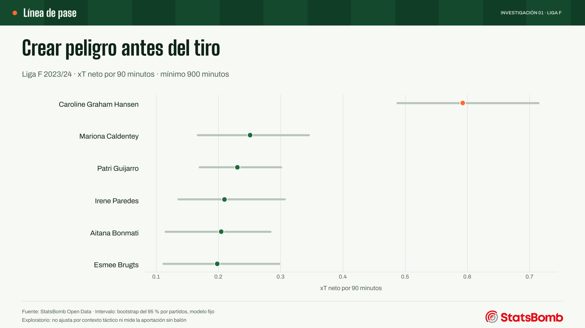
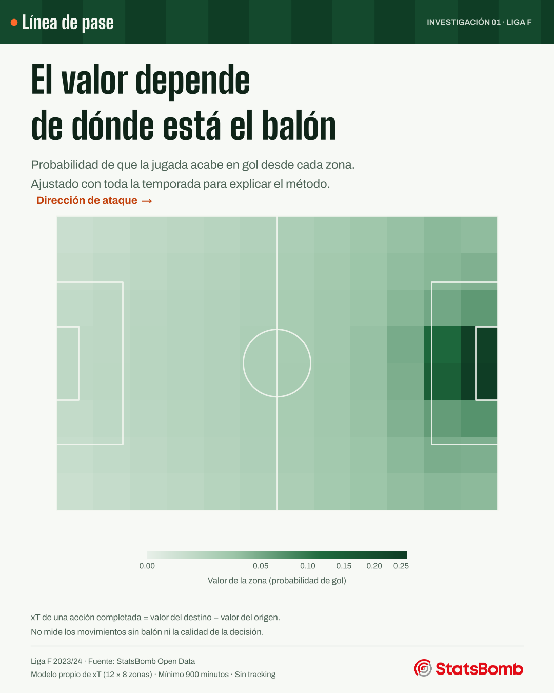
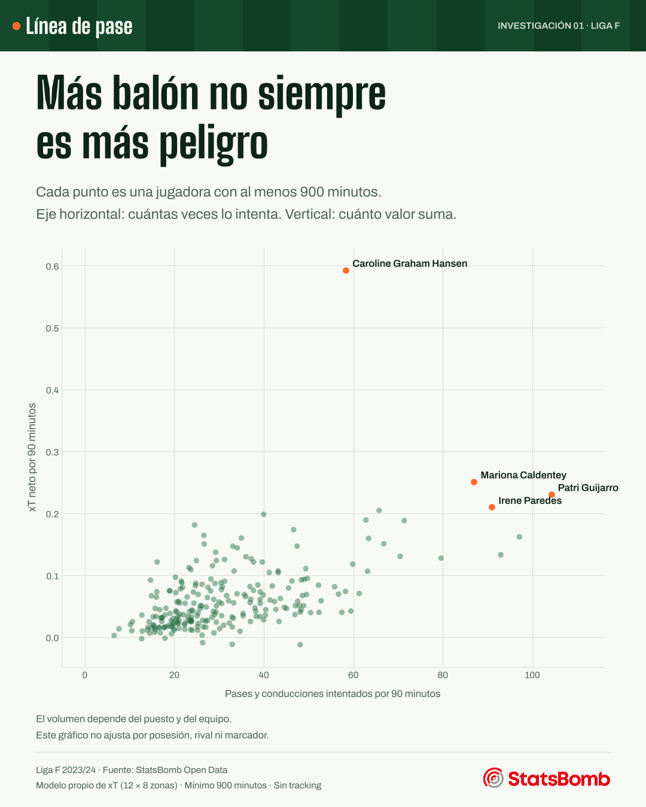

Proyectos / Investigación
Investigación · Fútbol femenino · Liga F 2023/24
El peligro empieza antes del último pase
Los goles y las asistencias solo cuentan el final de la jugada. Este estudio usa los 240 partidos de la Liga F 2023/24 para medir quién acerca el balón, con pases y conducciones, a las zonas desde las que se marca.
- Pregunta
- ¿Qué jugadoras hacen avanzar el peligro antes del tiro?
- Datos
- StatsBomb Open Data · 16 equipos · 168.296 acciones de juego abierto
- Herramientas
- Python (pandas, NumPy, Matplotlib) · modelo propio de xT · código y datos
Resultados
¿Quién hace avanzar el peligro?
Antes del último pase, alguien ha llevado el balón desde una zona de poco valor hasta otra desde la que es más fácil acabar en gol. La amenaza esperada (expected threat, xT) sirve para medir esa parte de la construcción.
Caroline Graham Hansen suma 0,593 xT neto por 90 minutos, más del doble que la siguiente. Detrás aparecen Mariona Caldentey (0,251) y Patri Guijarro (0,231). Solo cuentan las jugadoras con al menos 900 minutos.
Su intervalo va de 0,488 a 0,714: refleja cuánto varía entre sus partidos. No recoge toda la incertidumbre del modelo, así que el orden de las demás no debe leerse como una clasificación exacta.

El equipo también está dentro del número
8 de las diez primeras juegan en el Barcelona. Tener más balón, jugar más cerca del área rival y estar en un equipo dominante da más ocasiones de sumar valor. Dividir por 90 minutos corrige el tiempo jugado, pero no iguala los contextos: el estudio no ajusta por puesto, rival, posesión ni marcador.
| Jugadora | Equipo en 2023/24 | Minutos | xT/90 | Intervalo 95 % |
|---|---|---|---|---|
| Caroline Graham Hansen | Barcelona WFC | 1.673 | 0,593 | 0,488–0,714 |
| Mariona Caldentey | Barcelona WFC | 1.505 | 0,251 | 0,167–0,346 |
| Patri Guijarro | Barcelona WFC | 1.721 | 0,231 | 0,170–0,301 |
| Irene Paredes | Barcelona WFC | 1.306 | 0,210 | 0,136–0,307 |
| Aitana Bonmati | Barcelona WFC | 1.634 | 0,205 | 0,115–0,284 |
| Esmee Brugts | Barcelona WFC | 1.529 | 0,198 | 0,112–0,298 |
| Lucy Bronze | Barcelona WFC | 1.401 | 0,189 | 0,104–0,277 |
| Ona Batlle | Barcelona WFC | 1.675 | 0,188 | 0,117–0,272 |
| Racheal Kundananji | Madrid CFF | 1.082 | 0,181 | 0,102–0,265 |
| Olga Carmona | Real Madrid CF W | 1.979 | 0,174 | 0,124–0,221 |
Método
Valor del destino menos valor del origen
El campo se divide en 96 zonas, 12 a lo largo y 8 a lo ancho. Para cada zona se calcula la probabilidad de tirar y marcar desde ella y la de mover el balón con éxito a cada una de las demás. Resolviendo ese sistema por iteración, cada zona recibe un valor: la probabilidad de que la jugada acabe en gol si el balón está ahí.
Un pase o una conducción completados suman el valor de la zona de destino menos el de la de origen. Ir hacia una zona más valiosa suma; volver atrás resta.
Para no valorar un partido con un modelo que ya lo ha visto, los partidos se separan en cinco grupos y cada grupo se valora con un modelo ajustado con los otros cuatro. Los minutos de cada jugadora se reconstruyen con las alineaciones, los cambios y las expulsiones.


La comprobación que cambia la lectura
Crear peligro y arriesgar no son lo mismo
El orden apenas cambia con una cuadrícula más gruesa o más fina: la correlación de rangos es 0,956 con 8 × 6 zonas y 0,973 con 16 × 12. En cambio, si los pases fallidos restan el valor de la zona donde se pierden, la correlación baja a 0,46.
Por eso el titular tiene que ser preciso: la medida principal habla del valor que añaden las acciones completadas. Una medida que castigue las pérdidas responde a otra pregunta.
Hasta dónde llega este análisis
- No ve las carreras sin balón ni dónde estaban las defensoras.
- No demuestra quién es mejor ni quién está infravalorada.
- Solo cuenta el juego abierto: deja fuera las jugadas que nacen de un saque.
- Son datos de 2023/24: no describen el rendimiento ni el club actual de las jugadoras.
Trabajo verificable
Datos, código y comprobaciones
Se revisaron 835.429 eventos de los 240 partidos, sin identificadores duplicados ni coordenadas fuera del campo. El código pasa siete pruebas automáticas y el cuaderno explica cada paso.
Descargar los resultados por jugadora (CSV). Incluye a las jugadoras con menos de 900 minutos, marcadas como no elegibles.
Fuente: StatsBomb Open Data. Los eventos originales no se redistribuyen, como pide su acuerdo de uso. Método basado en Karun Singh, con implementación propia.